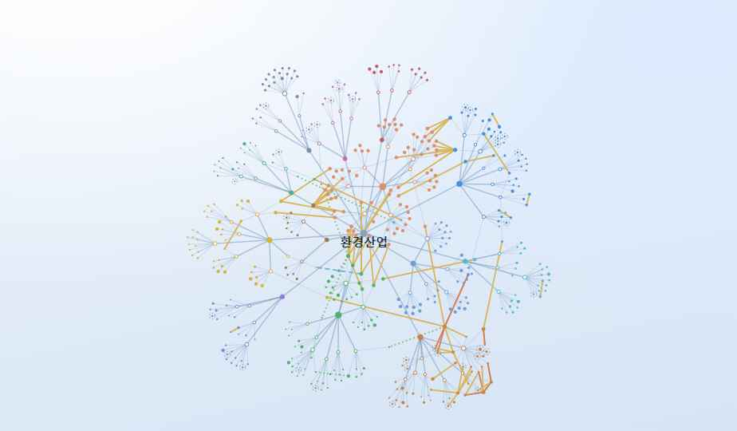
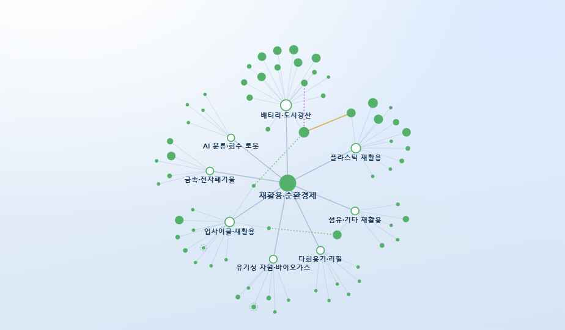
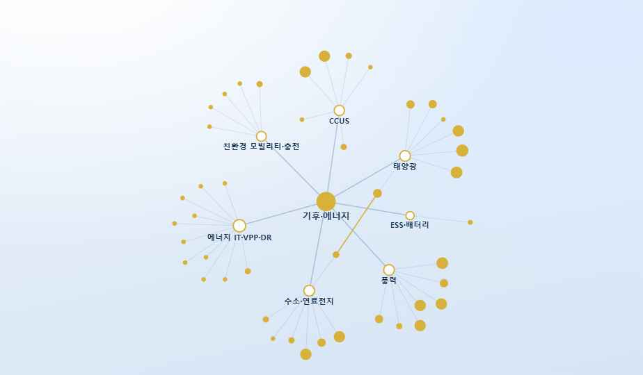
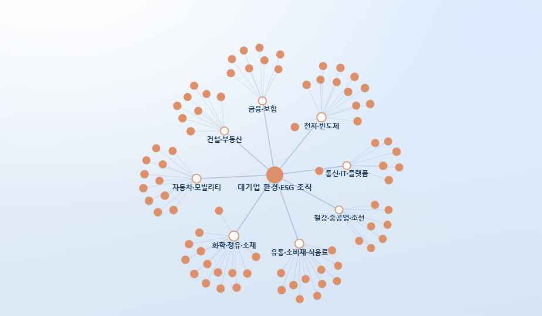

환경산업 검색을 시작하면, 기사 몇 개와 협회 회원사 목록, 채용공고가 흩어져 나옵니다. 저는 어떤 회사가 어느 분야에 속하는지, 서로 어떻게 얽혀 있는지는 한참을 뒤져도 감을 잡는게 쉽지 않았습니다. 그 과정을 개선하고자 환경 분야의 466개의 기업이 13개 분야로 정리된 비즈니스 지도를 제작했습니다. 환경분야의 비즈니스 생태계를 한눈에 확인하세요!




기업 홈페이지, 공시, 협회 회원사 명부, 언론 보도 같은 공개 자료를 기준으로 정리했습니다.
물·대기·폐기물처럼 전통적인 구분에 탄소·ESG, 대기업 환경조직처럼 최근에 커진 영역을 추가했습니다.
계열·인수·투자·협력·합작 등의 관계를 선으로 이어 직관적으로 표시했습니다.
지원할 회사가 업계 어디쯤에 있는지, 비슷한 일을 하는 다른 회사는 어디인지 한눈에 확인할 수 있습니다.
'환경산업'이라는 말 안에 실제로 어떤 일들이 있는지, 분야별로 훑으며 감을 잡을 수 있습니다.
협력할 만한 회사, 경쟁 구도, 대기업의 환경 조직이 어디와 이어져 있는지 빠르게 살펴볼 수 있습니다.
지도 목록에서 다양한 분야를 선택 할 수 있습니다. 분야를 선택하면 분야 내 기업들의 유기적 관계를 확인하고 기업 정보를 알아볼 수 있습니다.
회사 이름뿐 아니라 '배터리 재활용' 같은 키워드로도 다양한 기업을 찾을 수 있습니다. 기업 유형(대기업·중견·중소·스타트업)과 상장 여부 등 다양한 필터를 사용하실 수 있습니다.
클릭하면 상세설명이 있습니다. 무슨 일을 하는 회사인지, 전문분야는 어디인지, 상장은 했는지 등에 대해 알려주고 기업 공식 페이지로 연결해 줍니다.
기업에 대해 간단한 메모를 남길 수도 있습니다.
기업이 속한 국소 분야의 생태계를 지도로 확인할 수 있을 뿐만 아니라, 해당 기업이 주변 기업과 어떻게 연결된 관계인지까지 확인할 수 있습니다.
관심 분야를 연 뒤 기업 유형을 '중견·중소'로 좁혀보세요. 이름은 낯설지만 유망하고 탄탄한 회사들이 많습니다. 마음에 드는 곳을 찾으면 관계선을 따라가 비슷한 회사를 몇 개 더 모아두면 지원 리스트로 활용할 수 있습니다.
지원한 회사를 검색해 관계망을 띄워보세요. 어떤 대기업과 이어져 있고 누가 경쟁사인지 보이면, "이 회사가 업계에서 어디에 서 있는지" 한 문장으로 말할 수 있게 됩니다.
전체 지도에서 노드 크기를 '관계 수'로 바꿔보세요. 연결이 많은 회사일수록 크게 보여서, 생태계의 중심에 누가 있는지가 한눈에 드러납니다.